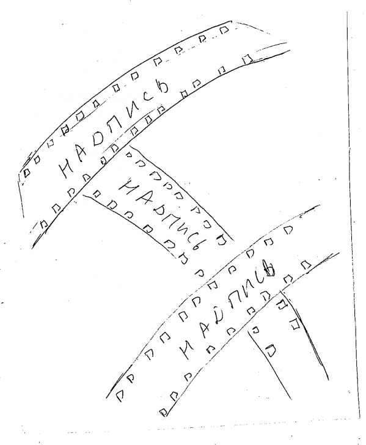

ВОПРОС / ОТВЕТ ДЛЯ НАЧИНАЮЩИХ
polzovatel-902 / 13.07.2010, 09:21/00:41
Форум:
Объясню на примере, чтоб было понятней... Открываю в кореле картинку (футболку с надписью) в формате JPG, мне нужно вытянуть из футболки надпись, т.е разъеденить файл... Говорят нужно формат изменить, еще что-то... Объясните, пожалуйста, что нужно сделать для этого...? Заранее спасибо.
Engenigger, мне удобнее представить конечный вид плёнки, а потом уже частями её отрисовать, найти похожие соединения плёнки в растре и повторить в векторе, потом уже детализировать, кадрами, метками...
shark, тогда возникают следующие вопросы:
1. Как трансформировать битмапы в соответствии с кадрами?
2. Как сделать, чтобы форма текста и осветления соответствовали искривленной поверхности. Когда я пытаюсь скопировать эффект оболочки с пленки на текст и осветление, получается ужас.
Ну и общий вопрос - как изогнуть пленку без искажений (сейчас у меня прямоугольные кадры превращаются в "квадратные")?
А получиться должно, что-то вроде 
сначала, как и правильно говорит Hepatitis C, вам надо изогнуть пленку, вдоль пути можно накидать квадратные прорези, а потом уже ставить кадры. Битмапы особо не изогнешь, это надо растровым редактором делать. Осветление делаем отдельной кривой.
Engenigger, если Вам не сложно, прикрепите к письму cdr то что вы хотите, что бы понять сколько работы по детализации, попробую помочь.
Hepatitis C, прошу прощения, не заметил первый ответ. До такого качества графики мне как до Луны пешком, я, к сожалению, совсем не художник. Так что мне бы как-нибудь попроще :)
А Вы прикрепите ваш cdr файл когда у Вас плёнка без изгибов, я попробую Вам помочь.
Hepatitis C, прикрепил. Кстати, возник еще вопрос - почему изгиб происходит только в точках соединения кадров, из которых составлена пленка (получается ломаная линия)? Ведь пленка представляет собой цельную кривую.
Engenigger, А как Вы хотите данные элементы использовать? печатать? оформить в пространстве? Сохранить картинку для веб пересылки?
Печать (A4 или A3). Это будет что-то вроде афиши.
Engenigger, Ну на быструю руку получилось так. Завтра попробую найти время и сделать ровнее.
А это будет на каком то фоне? оформлен еще как то?
coreldraw 3,5мгб
рабочий файл 10мгб
Страницы